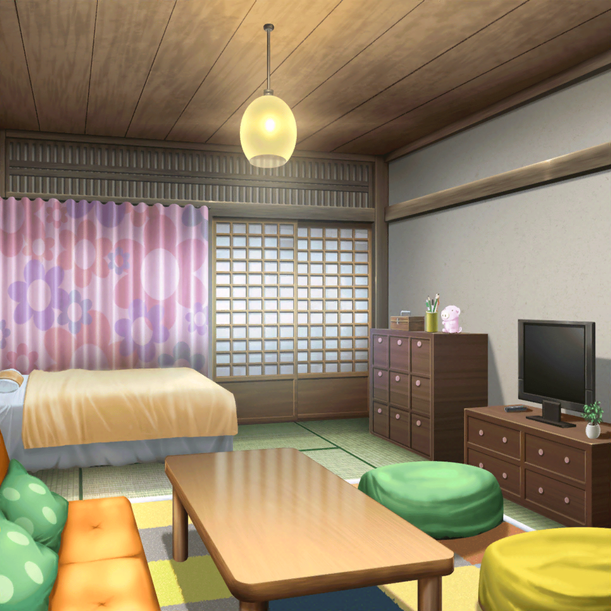

合宿当日
市ヶ谷家
香澄
おはよーっございまーっす！
あと、よろしくおねがいしまーす！
有咲
朝からでけえよ、声
沙綾
お、出てきた。おはよ
りみ
有咲ちゃん、おはようっ。
——それから、よろしくおねがいしますっ
有咲
なんだよ香澄といい、りみといい、急に改まって。
いつもはもっと適当に入ってくるだろ
たえ
合宿だから
香澄
そう！ 今日は合宿だからっ！
いつもとは違うんだよ！
有咲
だから声がでか……
ま、気が抜けてるよりはいいか
万実
いらっしゃい。
ゆっくりしていってね
香澄
あっ、有咲のおばあちゃん！
よろしくおねがいしまーす！
万実
はい、こちらこそよろしく。
飲み物、後で蔵に持っていくけど、ジュースでいい？
有咲
ばあちゃん、気を遣わなくていいからっ
有咲
——さっさとはじめよう。蔵、開けるぞ。
カギは持って来てるよな、責任者？
香澄
うん！
えーと……確か、ここに……あれっ？
りみ
えっ
香澄
違う、こっちのポケットだ！
あったあった！ よかった～！！
たえ
よかった。ドキッっとした
有咲
……失くしたら二度と貸さないからな……

市ヶ谷家 蔵
沙綾
さて、と。まずは歌詞からはじめよっか。
各自、アイディアがあったら出す感じ？
香澄
はいはーい！
商店街のお祭りなんだから、商店街のことを入れようよ！
有咲
お？ 香澄にしてはまともな意見だな
香澄
ふふーん
りみ
でも、商店街のことを歌詞にするって……どういうふうに？
香澄
え？ えーっと……♪ 北沢精肉店のコロッケ～♪
サクサクホクホクおいしいよ～♪
１コ税込86円～♪
沙綾
くすっ。そ、それじゃあただのＣＭだよ
香澄
……やっぱダメ？
たえ
私は嫌いじゃないけど
有咲
いや、やっぱナシだ、ナシ。
区役所のあいつのバカにした顔が目に浮かぶ。
もっとマジメなやつじゃないとダメだ
りみ
マジメな、話題……
マジメな、テーマ……？
たえ
愛
香澄・有咲・沙綾・りみ
愛！？
たえ
人類愛
香澄
大きい！
沙綾
コロッケから人類愛って、すごい飛躍…
りみ
わ、私たち人類愛は難しいかも……
チョココロネのことならわかるけど
たえ
確かに、愛は難しい
沙綾
なんだか漠然としちゃうしね。
もうちょっと身近な話のほうがうれしいな、私も
香澄
身近で……お祭りを盛り上げる曲……ううーん
数時間後
沙綾
……うわあ。もう夕方だ。
香澄、できそう？
香澄
ううう。まだー
たえ
曲は、ちょっとできた
りみ
ごめんね香澄ちゃん、途中から曲のほうばっかりで、
あんまり歌詞のアイディア出せなくって
有咲
頭つき合わせて、ただうなってるよかマシだろ。
それより、そろそろ夕飯の支度しないと、ごはん抜きになるぞ
香澄
はッ。ごはん！ みんなで作るんだよね！？
有咲
当然。ばあちゃんに６人分なんて作らせられるかっての。
キッチン、使っていいけど、きれいにな
香澄
は～い！
ふふっ、みんなと作るごはん、楽しみ～！

市ヶ谷家 有咲の部屋
香澄・たえ・りみ
——いっただっきま～す！
沙綾
ん、おいしい。
ただのカレーでも、みんなで作ったって思うと
いつもとちょっと違う気がするね
たえ
有咲が切った野菜、全部きれいな四角でサイコロみたい
有咲
単にあんま形ガタガタだと気持ち悪いだけ……
っていうか、おい！ このデッカいジャガイモ、香澄だろ！
香澄
あ。有咲、大あったり～♪
有咲
当たりって……
いいのかよ、そんなのんきに構えてて。歌詞もできてないのに。
もう日が沈むぞ
香澄
えっ！
りみ
本当だ。なんだか今日、時間が早く過ぎてく気がするね
たえ
光陰……なんだっけ
有咲
矢のごとし
たえ
それそれ
沙綾
——楽しいから、じゃないかな。
楽しい時間は、早く過ぎていっちゃうものでしょ
香澄
そうだね。あっ、でも私、今日だけじゃなくて、
みんなと会ってからずーっと、毎日があっという間だよ！
流れ星が流れてくみたいに！
りみ
私も……同じ、かな。練習が終わるとき、ときどき思うの。
みんなとの時間がもっと続けばいいのにな、って
沙綾
ん。大事にしたいよね。この時間。
こんなに気の合う仲間が集まるなんてさ、
きっと、すごくラッキーなことだから
たえ
私も。誘ってもらえて、よかった
香澄
えへ。家庭科で一緒に残されてよかったよね、おたえ
たえ
けがの功名だね。
……有咲は？
有咲
私？ 私は……別に……
有咲
まあ、その、なんだ。
退屈はしないよな、少なくとも。
このメンバーでいると
香澄
あ！
沙綾
香澄？ どうしたの？
香澄
歌！ これを歌にすればいいんだよ！
香澄
大好きなみんなと、一緒にいられてうれしい、
もっといっしょにいたいよ、っていう歌！
お祭りに集まったみんなを、つなぐ歌にするんだ！